La persistencia
de la memoria
Salvador Dalí
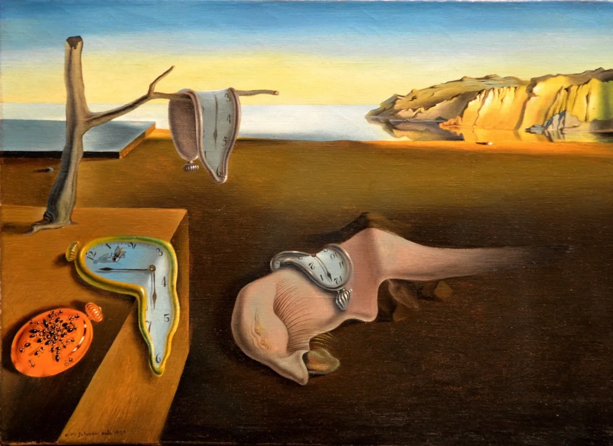
obra.webp
Guarda el archivo junto a este HTML con ese nombre y aparecerá automáticamente.
Uno de los rasgos más llamativos de la obra es su contradicción interna, Dalí pinta con una técnica minuciosa y realista, pero representa una escena imposible. El MoMAEl Museum of Modern Art (MoMA), en Nueva York, es uno de los museos de arte moderno y contemporáneo más importantes del mundo. describe esta mezcla como una atmósfera hiperrealista y alucinante, donde los objetos parecen casi tocables aunque sabemos que no podrían existir así. Esa es la clave de la pintura, la forma de pintar es real, pero lo que pinta no lo es.
Pasa el cursor sobre la obra para ver sus dimensiones, haz clic para ver su descripción
Ficha técnica
- Título
- La persistencia de la memoria
- Autor
- Salvador Dalí
- Año
- 1931
- Técnica
- Óleo sobre lienzo
- Dimensiones
- 24,1 × 33 cm
- Movimiento artístico
- Surrealismo
- Tipo de pieza
- Pintura
- Ubicación actual
- MoMAEl Museum of Modern Art (MoMA), en Nueva York, es uno de los museos de arte moderno y contemporáneo más importantes del mundo., Nueva York
La persistencia de la memoria es una pintura realizada por Salvador Dalí en 1931 y actualmente pertenece a la colección del Museum of Modern Art de Nueva York.
¿Por qué elegí esta obra?
¿Qué me llevó a escogerla?
Lo primero que me llamó la atención fue su título: La persistencia de la memoria. Antes incluso de analizar la pintura, el nombre me generó curiosidad por la relación que plantea entre el tiempo y aquello que permanece en nosotros. Me interesó pensar en cómo la memoria puede conservar experiencias del pasado, aunque con el tiempo cambien, se transformen o las recordemos de otra manera. Pero, sobre todo, el título me produjo una conexión emocional. Para mí, la memoria guarda personas, momentos y experiencias que son valiosas y que, de alguna manera, quisiéramos conservar a pesar del paso del tiempo. Por eso siento que la palabra "persistencia" expresa casi una resistencia frente al tiempo y al olvido, como el deseo de que aquello que realmente ha sido importante para nosotros pueda permanecer, incluso cuando el tiempo avanza.
¿Qué me llamó la atención al verla?
Al verla, me llamó mucho la atención la sensación de estar observando un instante detenido dentro de un sueño, casi como si la pintura fuera la fotografía de un frame del inconsciente. Los relojes derretidos me transmiten la sensación de que allí el tiempo ha perdido sus reglas, es decir puede detenerse, extenderse o simplemente dejar de importar. Esto conectó mucho con lo que me había atraído inicialmente del título, porque siento que en ese espacio onírico el tiempo deja de avanzar de la manera en que lo conocemos y aquello que permanece en la memoria puede seguir existiendo.
¿La conocía previamente?
Sí, era una obra que ya reconocía por sus relojes derretidos y por ser una de las imágenes más conocidas de Salvador Dalí. Sin embargo, al investigarla descubrí que detrás de esa imagen tan famosa existe un análisis mucho más profundo relacionado con el tiempo, la memoria, los sueños y el inconsciente. Eso hizo que la obra me interesara mucho más allá de su apariencia visual.
¿Por qué tiene potencial para un mashup?
Tiene un gran potencial porque posee elementos visuales muy reconocibles, pero también una idea que puede trasladarse a otros contextos. No se trata únicamente de reutilizar los relojes derretidos, sino de conservar la lógica de Dalí, al tomar algo que consideramos estable y transformar una de sus características para cambiar su significado. Esto permite reinterpretar la obra desde temas contemporáneos como la tecnología, la memoria digital, la percepción del tiempo o nuestra relación con las pantallas.
¿Qué estaba pasando cuando Dalí pintó La persistencia de la memoria?
Una crisis que cuestionó la confianza en la razón.
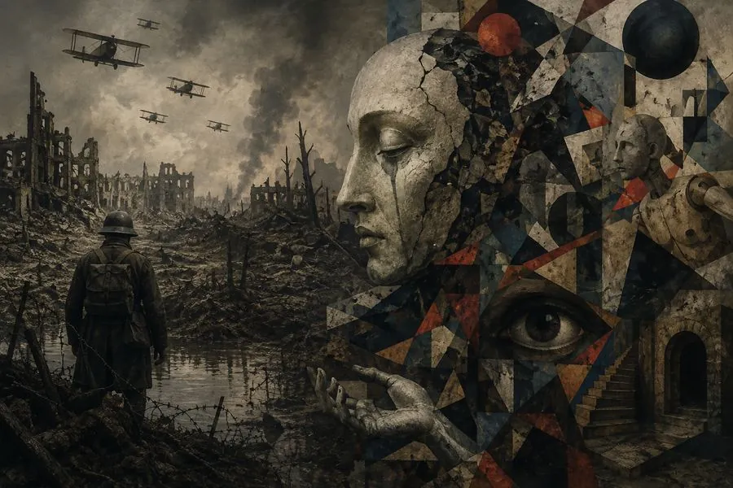
La destrucción de la Primera Guerra Mundial provocó una fuerte crisis en Europa. Muchos artistas comenzaron a cuestionar una sociedad que se consideraba racional y avanzada, pero que había sido capaz de producir una guerra tan devastadora. Este desencanto impulsó nuevas formas de arte que rechazaban las reglas y la lógica tradicional, preparando el camino para el dadaísmo y, posteriormente, el surrealismo.
El arte rompe con la lógica.
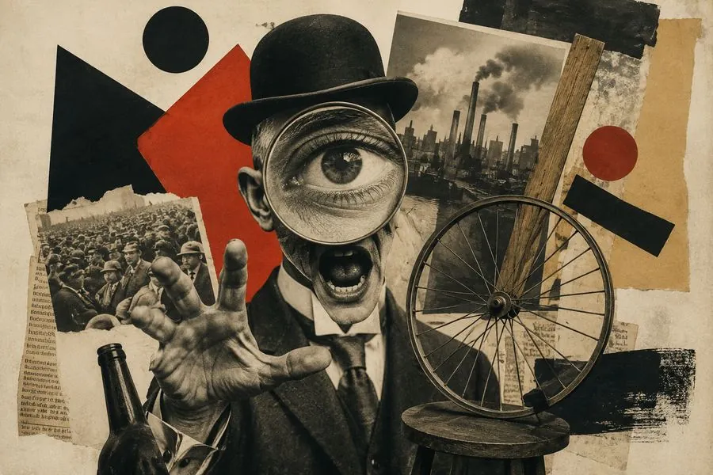
En ese clima surgió el dadaísmo, que rechazó las convenciones artísticas y utilizó el absurdo, la provocación y lo irracional como formas de cuestionar la sociedad. Esta ruptura abrió el camino para movimientos posteriores que buscarían nuevas maneras de representar la realidad.
Más allá de la realidad consciente.
El surrealismo recoge parte de la ruptura iniciada por el dadaísmo, pero da un paso más: en lugar de quedarse en el rechazo de la razón, busca explorar otra realidad a través de los sueños, la imaginación y el inconsciente. Formalizado por André Breton en 1924 e influenciado por las ideas de Freud, el movimiento buscaba liberarse del control racional y cuestionar las reglas con las que normalmente percibimos y entendemos la realidad.
Los sueños también podían convertirse en una forma de realidad.
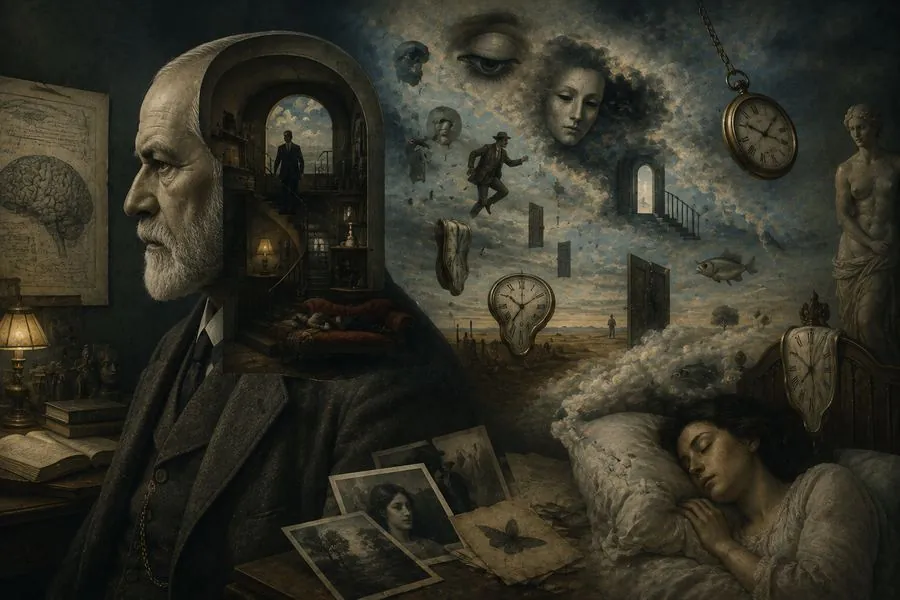
Las ideas de Sigmund Freud tuvieron una gran influencia sobre los surrealistas. El sueño y el inconsciente permitían explorar una realidad interior donde el tiempo, los recuerdos y las imágenes no tenían que seguir la lógica del mundo consciente. Dalí trasladó esa lógica a imágenes extremadamente precisas que parecen reales aunque representen situaciones imposibles.
Una nueva forma de comprender el tiempo.
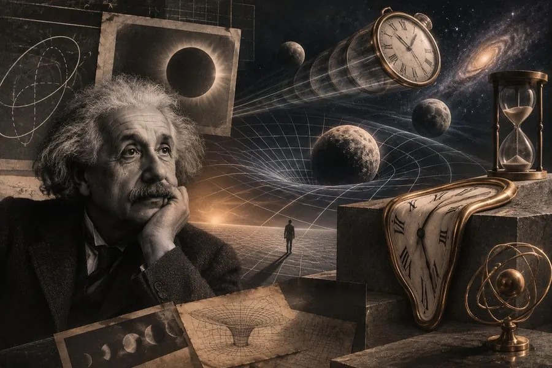
A comienzos del siglo XX, las teorías de la relatividad de Albert Einstein transformaron la comprensión científica del espacio y del tiempo, cuestionando la idea de un tiempo absoluto e independiente. Estas ideas formaban parte de un contexto intelectual en el que conceptos que antes parecían estables comenzaron a replantearse. Aunque no está demostrado que Dalí se inspirara directamente en Einstein, los relojes derretidos de La persistencia de la memoria fueron posteriormente relacionados con esta nueva concepción de un tiempo menos absoluto.
El tiempo entra en el territorio del sueño.
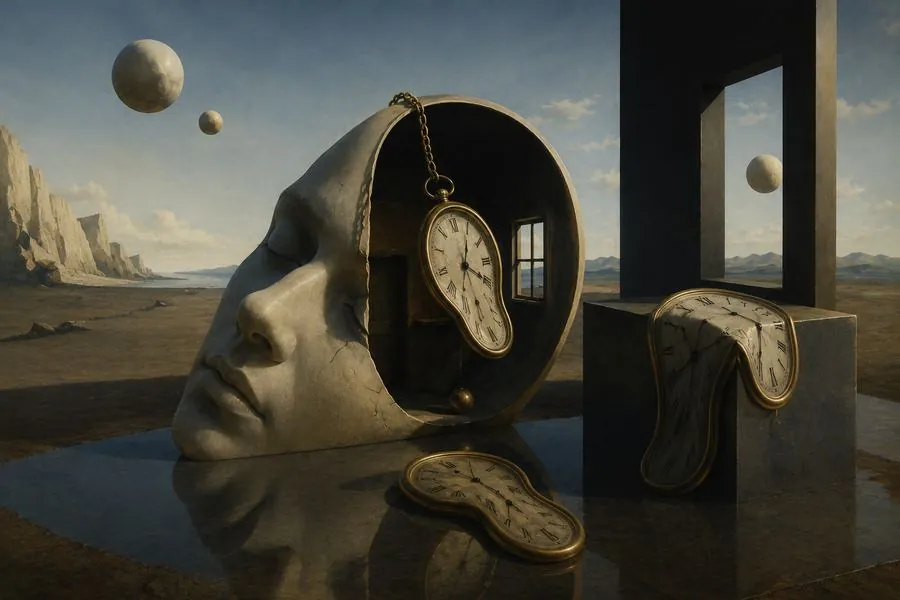
Dalí reúne estas inquietudes en un paisaje onírico donde objetos cotidianos dejan de obedecer sus reglas. Los relojes, normalmente rígidos y precisos, se derriten y se vuelven inútiles. Para MoMAEl Museum of Modern Art (MoMA), en Nueva York, es uno de los museos de arte moderno y contemporáneo más importantes del mundo., la escena sugiere un tiempo detenido o fuera de sincronía y funciona tanto como paisaje exterior como representación de un estado interior de la mente.
Surrealismo
Lo imposible representado como real
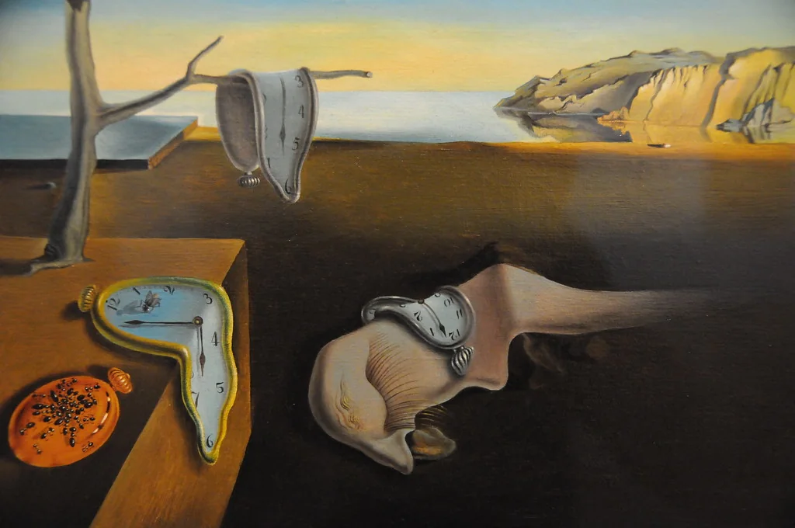
Los objetos dejan de comportarse como deberían. Un ejemplo son los relojes, que pierden su rigidez y se derriten. Dalí transforma así un objeto cotidiano y familiar en algo extraño e imposible.
El paisaje parece real, pero lo que ocurre en él responde a la lógica de un sueño, donde el tiempo, las formas y las asociaciones pueden funcionar de otra manera. Los elementos adquieren además un carácter simbólico que permite diferentes interpretaciones.
Dalí representa situaciones imposibles con detalle, volumen, luz y perspectiva realistas, haciendo que ese mundo extraño resulte visualmente creíble.
De obra surrealista a ícono cultural
La persistencia de la memoria trascendió su contexto original hasta convertirse en una de las imágenes más reconocibles del surrealismo y de la obra de Salvador Dalí.
Se presentó en Nueva York en 1932 y llamó la atención de la crítica casi de inmediato. En 1934 entró a la colección del MoMAEl Museum of Modern Art (MoMA), en Nueva York, es uno de los museos de arte moderno y contemporáneo más importantes del mundo., lo que ayudó a consolidar su reconocimiento internacional. No se volvió célebre solo con el paso de los años.
Dalí transformó un objeto universal, el reloj, en una imagen derretida e inesperada. Esa transformación se convirtió en uno de los símbolos visuales más asociados con el surrealismo.
Los relojes derretidos trascendieron la obra original ya que fueron citados, reinterpretados y adaptados como referencia visual de lo surreal y la alteración del tiempo.
Casi un siglo después sigue siendo reconocible. No hace falta conocer toda su historia para entender que un reloj derretido rompe algo que consideramos normal. Esa capacidad de reinterpretarse en cada época es lo que la mantiene vigente.
Dalí creó una imagen que dejó de pertenecer únicamente a una pintura para convertirse en un símbolo cultural.
Toca para ver por qué
Lo decimos porque hoy en día mucha gente reconoce los relojes derretidos incluso sin saber quién los pintó ni cuándo. Cuando una imagen se vuelve tan conocida que se usa, se copia y se recuerda por fuera del mundo del arte, deja de ser solo una pintura: se convierte en parte del lenguaje visual que todos compartimos.
Cómo está construida y qué transmite
obra.webp
Es el mismo archivo que usaste en la diapositiva 2, guárdalo junto al HTML y los 6 nodos calzan exactos sobre cada objeto.
Salvador Dalí
1904 – 1989 · Figueres, España
Salvador Dalí fue un pintor español, una de las figuras centrales del surrealismo del siglo XX. Formado en la Real Academia de Bellas Artes de San Fernando en Madrid, desarrolló desde joven una técnica extremadamente precisa que más tarde puso al servicio de un mundo completamente irracional: el de los sueños y el inconsciente.
Su estilo se reconoce por esa combinación poco común: dibuja y pinta con un realismo casi fotográfico, pero lo que representa desaparece de la lógica cotidiana. Para lograrlo desarrolló lo que llamó el método paranoico críticoUna técnica en la que Dalí se inducía a sí mismo un estado de delirio controlado para acceder a imágenes de su subconsciente, que luego pintaba con precisión casi documental., una forma de acceder deliberadamente a imágenes del subconsciente para después representarlas con un detalle casi documental.
Su aporte no se quedó únicamente en la pintura. Dalí trabajó también en escultura, joyería, diseño de escenografías y cine: colaboró con Luis Buñuel en Un perro andaluzCortometraje surrealista de 1929, dirigido junto a Luis Buñuel, célebre por su montaje de imágenes perturbadoras sin narrativa lógica. y con Alfred Hitchcock en la secuencia onírica de RecuerdaPelícula de 1945 dirigida por Hitchcock, para la que Dalí diseñó una célebre secuencia de sueño..
Entre sus otras piezas destacadas
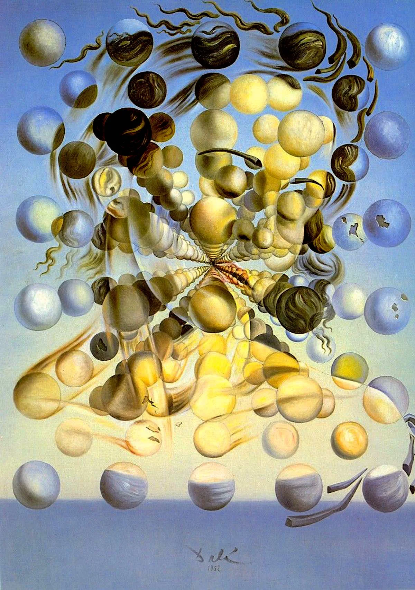
dali-obra-2.webpGalatea de las esferas
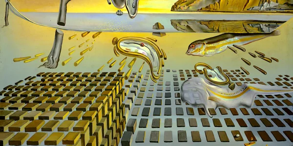
dali-obra-3.webpLa desintegración de la persistencia de la memoria
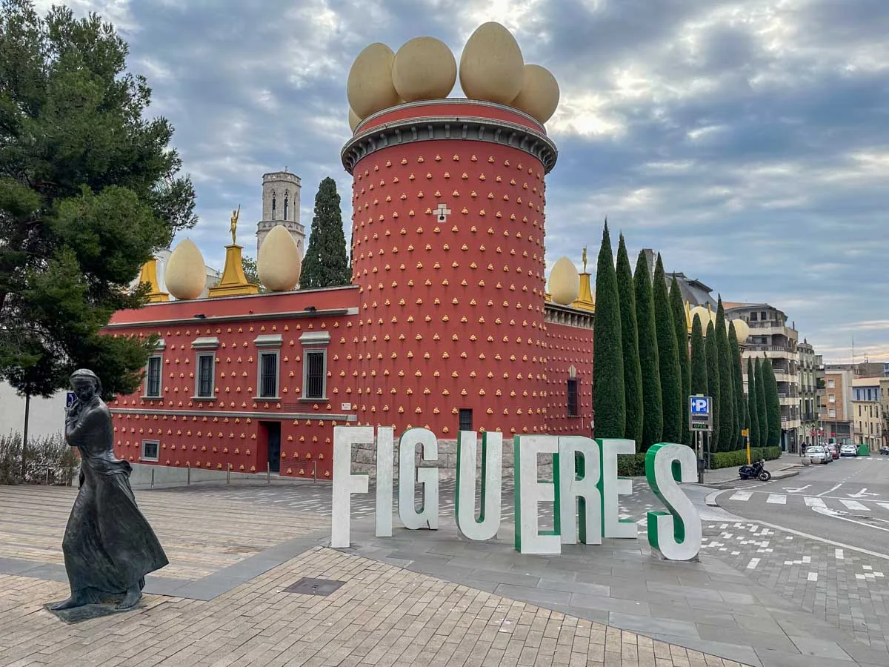
dali-obra-4.webpTeatro-Museo Dalí
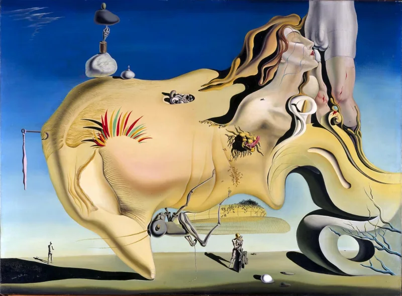
dali-obra-1.webpEl gran masturbador
¿Por qué sigue funcionando hoy?
Su mayor fuerza está en los relojes derretidos. Dalí toma un objeto cotidiano, que normalmente asociamos con precisión y rigidez, y lo presenta de una forma completamente inesperada. El reloj sigue siendo reconocible, pero su transformación resulta tan extraña que es difícil de olvidar. Esa combinación entre algo familiar y algo imposible hace que la obra pueda identificarse incluso a partir de uno solo de sus elementos.
Los relojes derretidos han trascendido la pintura y se han convertido en un referente de la cultura visual, reinterpretado en publicidad, diseño, memes y otras manifestaciones contemporáneas. Para mí, esto demuestra que la obra se volvió verdaderamente icónica. Ya no necesito ver la pintura completa para reconocer la referencia a Dalí y al surrealismoMovimiento artístico surgido en 1924, formalizado por André Breton, que buscaba explorar el inconsciente y los sueños más allá de la lógica racional..
Porque su fuerza no depende únicamente de copiar su apariencia. Detrás del reloj derretido existe una lógica que puede trasladarse a otros objetos y contextos. Se puede partir de algo conocido, alterar una de sus características y hacer que esa transformación produzca un significado nuevo. Esto permite crear nuevas interpretaciones sin repetir literalmente la obra original.
Mi reflexión final sobre la reinterpretación
Se puede partir de las formas icónicas y oníricas de los relojes, pero creo que la base para iniciar cualquier reinterpretación estaría en esta estructura.
Fuentes consultadas
Museum of Modern Art (MoMA), ficha oficial y audioguía de la obra, moma.org
Fundación Gala-Salvador Dalí, museodali.cat
Análisis históricos y de composición sobre "The Persistence of Memory", diversas fuentes académicas de historia del arte
Tres reinterpretaciones reales de la obra
Fuentes consultadas
ResearchGate, capítulo "Intertextuality", referencia a la ilustración de Matt Groening
Artsy Editorial, "Understanding The Persistence of Memory"
Muppet Wiki (Fandom), ficha de Salvador Dalí, sobre "The Persistence of Cookies" de Joel Schick
Ilustración publicada originalmente en gazpachoblog.com; análisis de elementos propio
Una misma imagen, muchas versiones
Otras apariciones y adaptaciones de "La persistencia de la memoria" a lo largo del tiempo, en distintos medios y contextos.
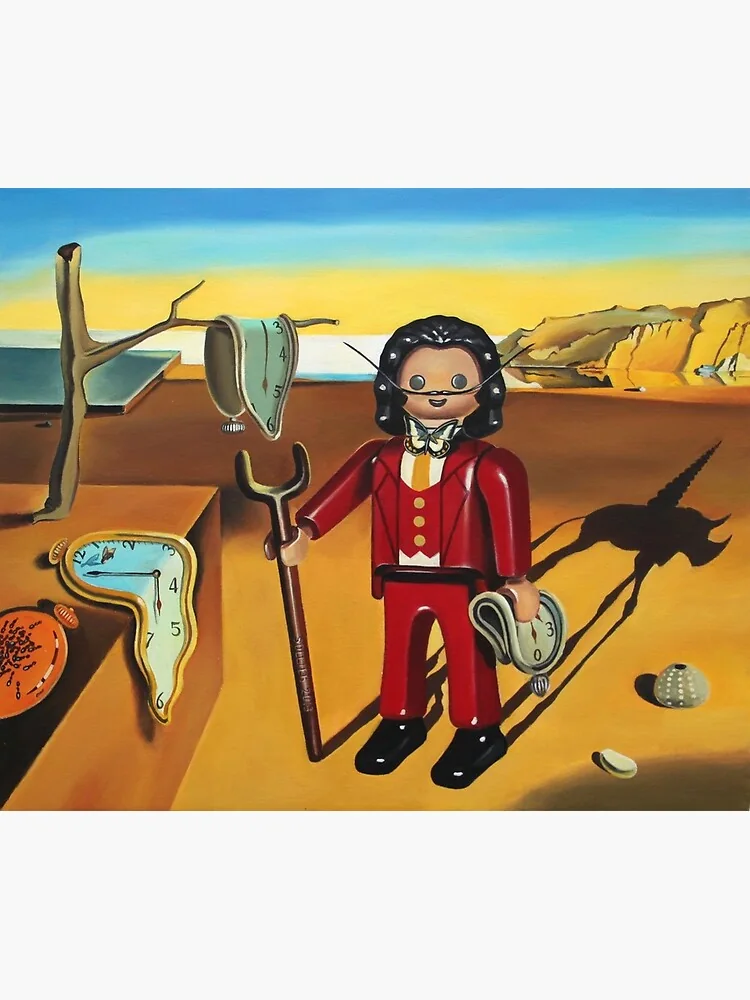
galeria-1.webp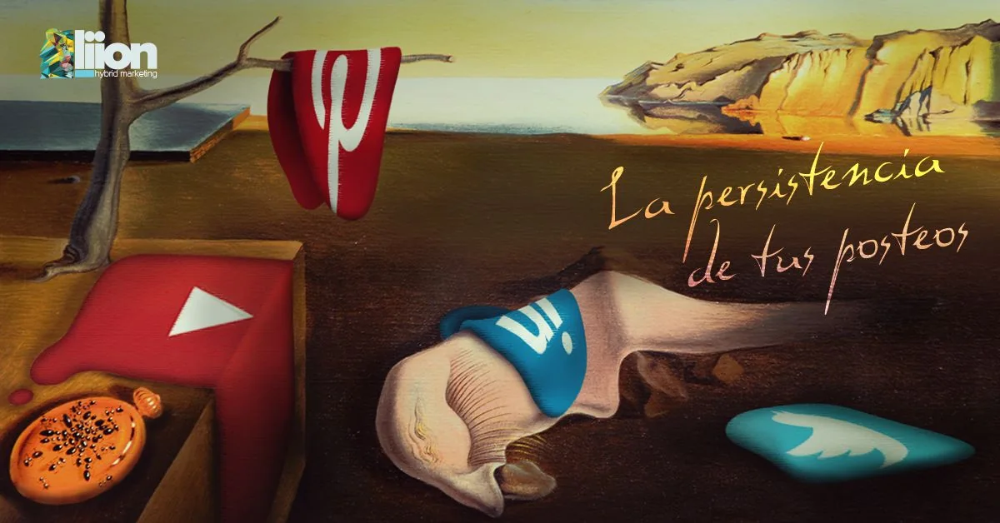
galeria-2.webp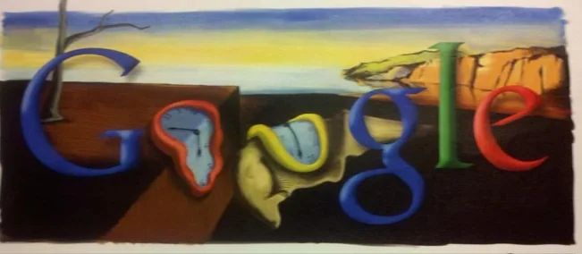
galeria-3.webp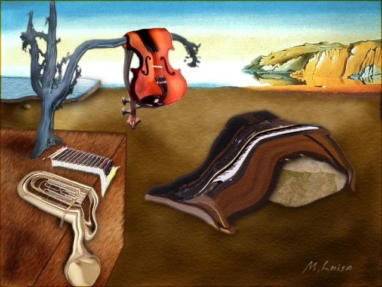
galeria-4.webp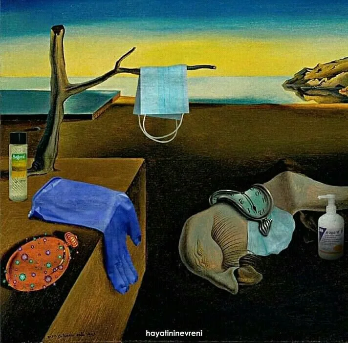
galeria-5.webp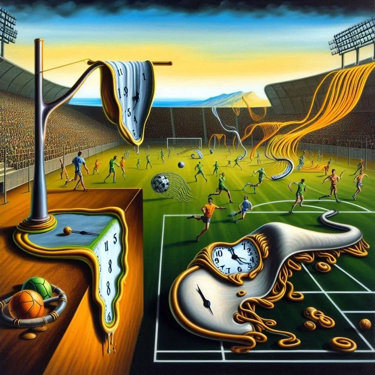
galeria-6.webp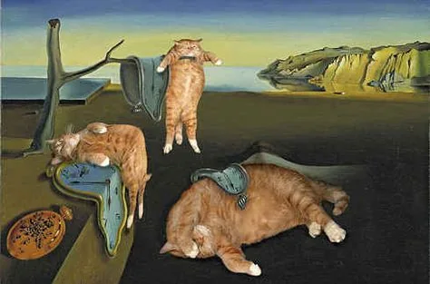
galeria-7.webp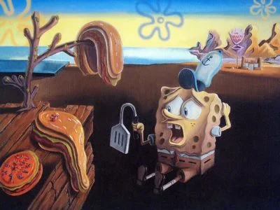
galeria-8.webp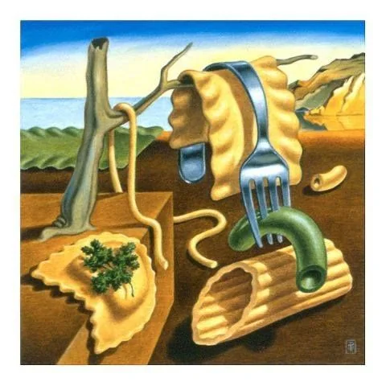
galeria-9.webp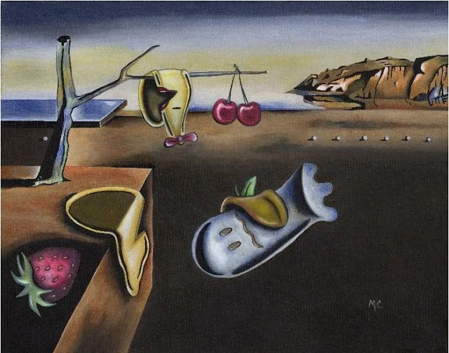
galeria-10.webp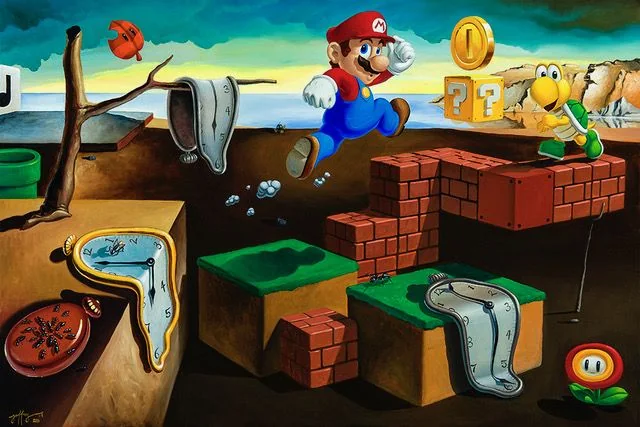
galeria-11.webp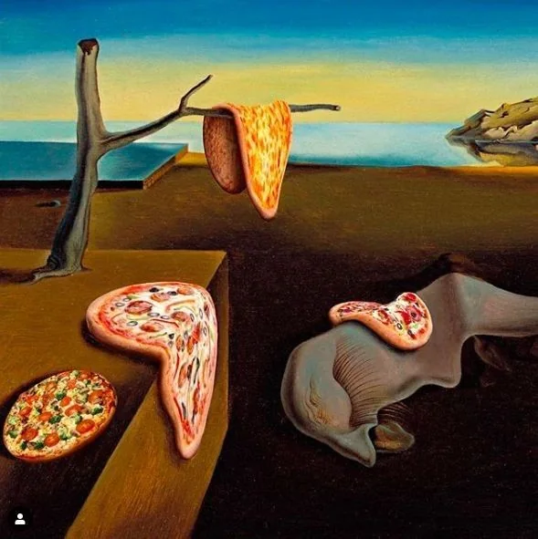
galeria-12.webpEvidencia del proceso digital
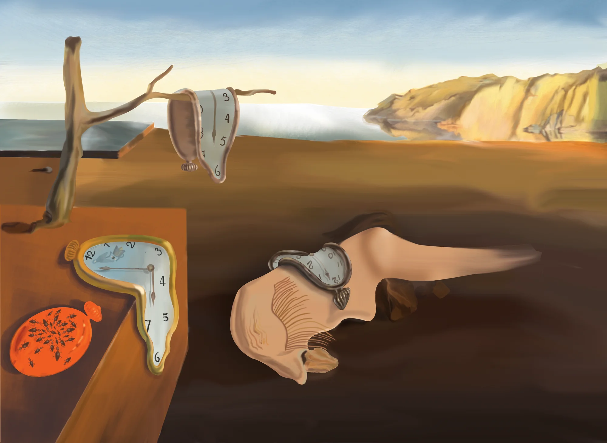
replica-digital.webpReseña del proceso digital
Elegí Photoshop porque ya tenía experiencia previa con el programa, y porque es una herramienta especialmente adecuada para la pintura y edición de imágenes rasterizadas. Sus pinceles se acercan bastante a la textura real de una pincelada, lo que me permitió trabajar con capas, selecciones, degradados, luces y sombras, todo lo necesario para intentar reproducir fielmente una obra pictórica como La persistencia de la memoria.
Lo más difícil fue tener la paciencia de trabajar tonalidad por tonalidad en cada elemento. Eran muchas partes, y replicar el color, la textura, la sombra y el brillo de cada una fue un proceso bastante desafiante y agotador. Al principio los tonos se veían muy separados entre sí, así que tuve que apoyarme mucho en la Eyedropper Tool y la Smudge Tool, haciendo varios ajustes hasta lograr un resultado más integrado, parecido al original.
Comparado con la réplica a mano, lo digital se sintió más difícil. En el análogo podía mezclar la pintura físicamente hasta encontrar el tono exacto, y el pincel ya traía su propia textura natural, así que era un proceso más intuitivo y rápido. Replicar digitalmente esas mismas tonalidades y texturas, en cambio, fue un reto mucho mayor.
Al final, replicar la obra con tanto detalle me hizo entender que tiene muchas más variaciones de color de las que se perciben a simple vista. Pude ver mejor cómo Dalí combina luces, sombras, texturas y formas para crear profundidad, volumen, y esa atmósfera surrealista tan característica de la pintura.
Evidencia en video
Reseña del proceso a mano
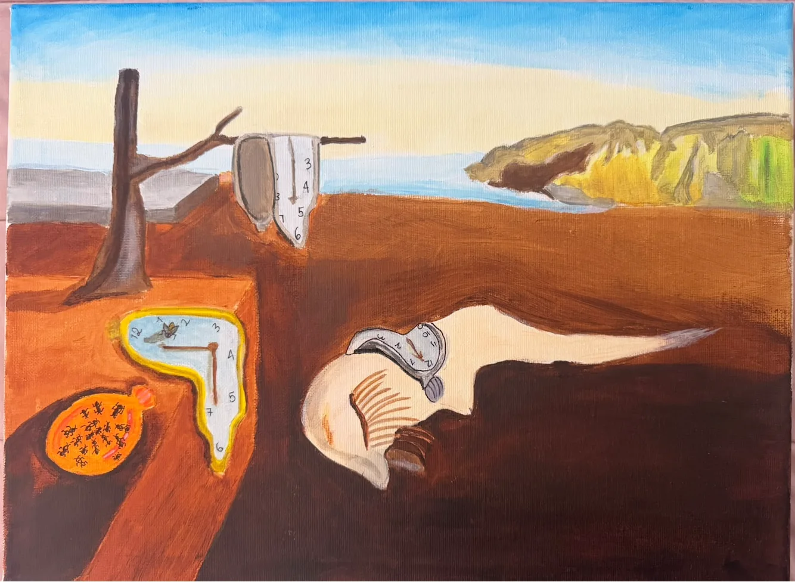
replica-analogo.webpReseña del proceso análogo
Trabajé sobre lienzo con pintura acrílica, y para los detalles más pequeños usé micropunta, que me dio la precisión que el pincel ya no alcanzaba a resolver.
Empecé por la mesa, seguí con el reloj naranja, después el reloj derretido, luego el árbol y el reloj que cuelga de la rama. Para ese punto ya había trabajado cada elemento con mucho detalle, lo que volvió el proceso bastante agotador. Después seguí con el piso, y ahí cambié de estrategia: dejé de usar pinceles pequeños y empecé a trabajar con pinceles grandes, mezclando sin tanta precisión, lo que en realidad me dio mejores resultados. Hice lo mismo con el cielo, y terminé con las montañas, que fue el elemento más difícil de todos para mí.
Lo más difícil de todo el proceso fue lograr la diversidad tonal: había muchísimos tonos distintos en cada elemento, y con tantas partes por resolver, el proceso se volvió lento. Reproducir bien las perspectivas, las formas y los tamaños también fue todo un reto.
Más que dificultades técnicas, lo que más me costó fue la paciencia y el tiempo que tuve que dedicarle. Los detalles muy pequeños eran difíciles de pintar solo con pincel, así que terminé resolviéndolos con micropunta, lo que me dio el control que necesitaba.
Las tres versiones, juntas
obra.webpOriginal
Salvador Dalí, 1931
replica-analogo.webpRéplica análoga
Pintura a mano
replica-digital.webpRéplica digital
Adobe Photoshop
Original · Salvador Dalí, 1931
Réplica análoga · Pintura a mano
Réplica digital · Adobe Photoshop
Reinterpretar la obra en un nuevo contexto conceptual, estético o cultural, con un proceso creativo propio y documentado.
La obra reinterpretada
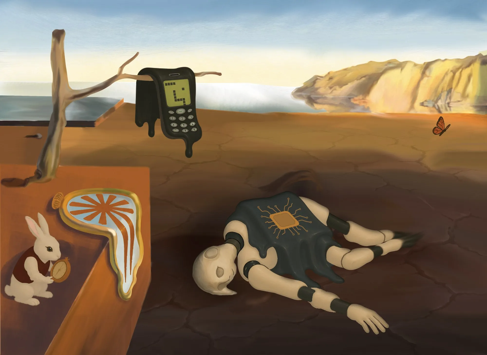
mashup-obra.webpConcepto del mashup
Este mashup reinterpreta La persistencia de la memoria para reflexionar sobre la relación entre el tiempo, la tecnología y el deterioro ambiental. Los relojes derretidos son reemplazados por tecnologías del pasado, presente y futuro, mostrando que ningún avance es permanente ni invulnerable, pues todo cambia, envejece y puede quedar obsoleto. De esta manera, la fluidez del tiempo planteada por Dalí se transforma en una crítica a la rápida evolución y sustitución de la tecnología.
Esta evolución ocurre dentro de un paisaje árido y agrietado, por lo que la obsolescencia tecnológica no aparece como un proceso neutral. Cada generación de dispositivos deja consecuencias que se acumulan sobre el planeta. El olivo seco refuerza esta contradicción al sostener el celular antiguo, mostrando que la tecnología depende de una naturaleza que, al mismo tiempo, contribuye a deteriorar.
El robot representa a la humanidad avanzando hacia un futuro tecnológico con los ojos cerrados ante sus consecuencias. El chip, ubicado en el centro de su cuerpo, presenta la inteligencia artificial como el motor de ese futuro, pero también advierte sobre la dependencia tecnológica y el posible debilitamiento del pensamiento humano.
El Conejo Blanco fue tomado de Alicia en el País de las Maravillas porque es un personaje estrechamente relacionado con el tiempo, la prisa y la entrada hacia un mundo desconocido. Dentro del mashup representa la ansiedad de la humanidad por innovar y no quedarse atrás, pero también la urgencia de reaccionar ante el daño producido. El reloj sólido que sostiene contrasta con las tecnologías derretidas, pues estas pueden cambiar y desaparecer, mientras el tiempo real para actuar continúa avanzando.
La mariposa fue elegida porque simboliza de manera general la transformación, la fragilidad y el carácter efímero de la vida. Su vuelo a través del paisaje representa un instante breve de vida frente al avance del tiempo. Además, su ligereza y movimiento contrastan con el cuerpo inmóvil del robot, el olivo seco y el territorio deteriorado, reforzando la posibilidad de que la vida desaparezca si no se protegen las condiciones que la sostienen.
En conjunto, la elección de tres tecnologías diferentes construye un recorrido a través del tiempo. El celular antiguo representa el pasado, el emblema de inteligencia artificial representa el presente y el robot con el chip representa el futuro. Aunque pertenecen a momentos distintos, todos evidencian un mismo ciclo de innovación, envejecimiento y sustitución, cuyas consecuencias se acumulan sobre el planeta. De esta manera, la obra cuestiona un progreso acelerado que promete ampliar las capacidades humanas, pero que puede terminar destruyendo tanto las condiciones naturales que lo hacen posible como nuestra autonomía para pensar y decidir.
Libro de documentación
Abre el libro y pasa las páginas para ver cómo evolucionó la pieza: cada diapositiva del proceso queda partida en dos páginas.
Llevar la reinterpretación de la obra al movimiento y al sonido, con un video final que se entiende por sí solo y una documentación interactiva de todo el proceso.
Mashup audiovisual
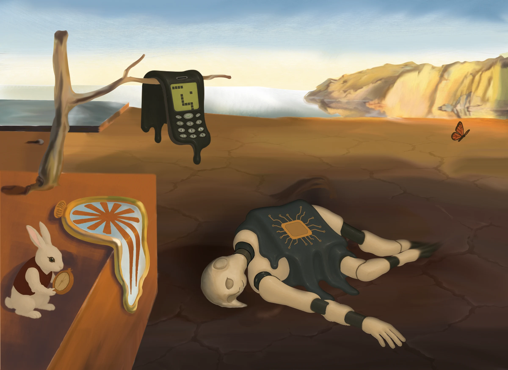
Documentación del proceso
Haz clic en el libro o usa las flechas para pasar las páginas, o salta directo a la parte que quieras ver.